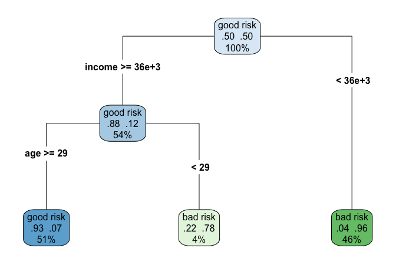
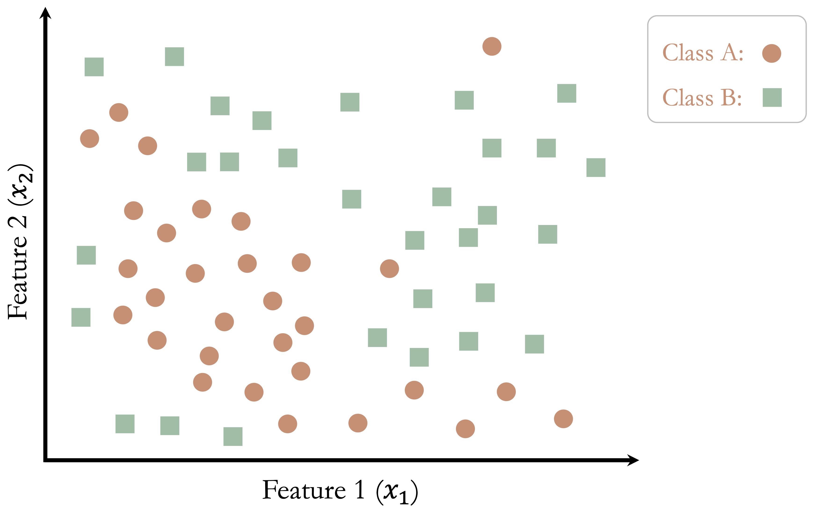
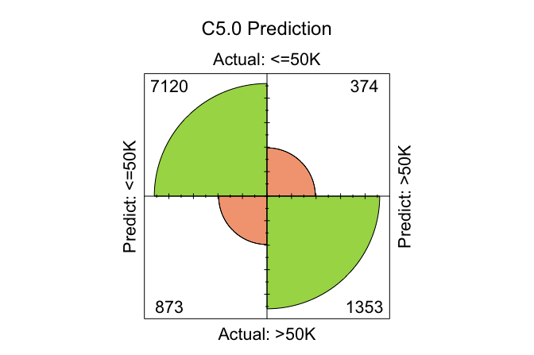

11 Decision Trees and Random Forests
Imagine a bank evaluating loan applications. Given details such as income, age, credit history, and debt-to-income ratio, how does the bank decide whether to approve or reject a loan? Similarly, how do online retailers recommend products based on customer preferences? These decisions, which mimic human reasoning, are often powered by decision trees. This simple yet powerful machine learning technique classifies data by following a series of logical rules.
Decision trees are used across diverse domains, from medical diagnosis and fraud detection to customer segmentation and automation. Their intuitive nature makes them highly interpretable, enabling data-driven decisions without requiring deep mathematical expertise. However, while individual trees are easy to understand, they are prone to overfitting: capturing noise in the data rather than general patterns. Random forests address this limitation by combining multiple decision trees to produce a more accurate and stable model.
In the previous chapter, you learned how to build and evaluate regression models to predict continuous outcomes. In this chapter, we return to supervised learning from a new angle: tree-based models, which unify classification and regression under a single, flexible framework. Decision trees can automatically capture nonlinear relationships and interactions between variables, without requiring manual feature engineering or transformations.
To see decision trees in action, consider the example in Figure 11.1, which predicts whether a customer’s credit risk is classified as “good” or “bad” based on features such as age and income. This tree is trained on the risk dataset, introduced in Chapter 9, and consists of decision nodes representing yes/no questions, such as whether yearly income is below 36,000 (income < 36e+3) or whether age is greater than 29. The final classification is determined at the terminal nodes, also known as leaves.
Curious how this tree was built from real data? In the next sections, we will walk through each step of the process, from data to decision.
Decision trees are highly interpretable, making them especially valuable in domains such as finance, healthcare, and marketing, where understanding model decisions is as important as accuracy. Their structured form allows for easy visualization of decision pathways, helping businesses with customer segmentation, risk assessment, and process optimization.
In this chapter, we continue building on the Data Science Workflow introduced in Chapter 2. So far, we have learned how to prepare and explore data, apply classification methods (such as k-Nearest Neighbors in Chapter 7 and Naive Bayes in Chapter 9), as well as regression models (Chapter 10), and evaluate performance (Chapter 8). Decision trees and random forests now offer a powerful, non-parametric modeling strategy. They can handle both classification and regression tasks effectively.
What This Chapter Covers
This chapter continues the modeling journey by building on what you learned in the previous chapters: both classification methods such as k-Nearest Neighbors and Naive Bayes, and regression models. Decision trees offer a flexible, non-parametric approach that can model complex relationships and interactions without requiring predefined equations. Their adaptability often leads to strong predictive performance in both classification and regression settings, especially when extended to ensemble methods like random forests.
You will begin by learning how decision trees make predictions by recursively splitting the data into increasingly homogeneous subsets. We introduce two widely used algorithms: CART and C5.0, and explore how they differ in structure, splitting criteria, and performance. From there, you will discover random forests, an ensemble approach that builds multiple trees and aggregates their predictions for improved accuracy and generalization.
This chapter includes hands-on modeling examples using datasets on credit risk, income prediction, and customer churn. You will learn to interpret decision rules, assess model complexity, tune hyperparameters, and evaluate models using tools such as confusion matrices, ROC curves, and variable importance plots.
By the end of this chapter, you will be able to build, interpret, and evaluate tree-based models for both categorical and numeric outcomes. You will also understand when decision trees and random forests are the right tools for your data science problems, especially when balancing interpretability with predictive power.
11.1 How Decision Trees Work
Are you interested in learning how to build decision trees like the one in Figure 11.1, trained on real-world data? In this section, we unpack the core ideas behind decision trees: how they decide where to split, how they grow, and how they ultimately classify or predict outcomes.
A decision tree makes predictions by recursively partitioning the data into increasingly homogeneous groups based on feature values. At each split, it chooses the question that best separates the data, gradually forming a tree-like structure of decision rules. This divide-and-conquer approach is intuitive, flexible, and capable of modeling both categorical and numerical outcomes. As a result, decision trees are a popular choice in many data science applications.
The quality of a split is assessed using a metric such as the Gini Index or Entropy, which are introduced in the following sections. The tree continues growing until it meets a stopping criterion, for example: a maximum depth, a minimum number of observations per node, or a lack of further improvement in predictive power.
To see this process in action, consider a simple dataset with two features (\(x_1\) and \(x_2\)) and two classes (Class A and Class B), as shown in Figure 11.2. The dataset consists of 50 data points, and the goal is to classify them into their respective categories.

The process begins by identifying the feature and threshold that best separate the two classes. The algorithm evaluates all possible splits and selects the one that most improves the homogeneity in the resulting subsets. For this dataset, the optimal split occurs at \(x_1 = 10\), dividing the dataset into two regions:
The left region contains data points where \(x_1 < 10\), with 80% belonging to Class A and 20% to Class B.
The right region contains data points where \(x_1 \geq 10\), with 28% in Class A and 72% in Class B.
This first split is illustrated in Figure 11.3, where the decision boundary is drawn at \(x_1 = 10\).

Although this split improves class separation, some overlap remains, suggesting that further refinement is needed. The tree-building process continues by introducing additional splits based on \(x_2\), creating smaller, more homogeneous groups.
In Figure 11.4, the algorithm identifies new thresholds: \(x_2 = 6\) for the left region and \(x_2 = 8\) for the right region. These additional splits refine the classification process, improving the model’s ability to distinguish between the two classes.

This recursive process continues until the tree reaches a stopping criterion. Figure 11.5 shows a fully grown tree with a depth of 5, demonstrating how decision trees create increasingly refined decision boundaries.

At this depth, the tree has created highly specific decision boundaries that closely match the training data. While this deep tree perfectly classifies the training data, it may not generalize well to new observations. The model has likely captured not just meaningful patterns but also noise, a problem known as overfitting. Overfitted trees perform well on training data but struggle to make accurate predictions on unseen data.
In the next subsection, we explore how decision trees make predictions and how their structure influences interpretability.
Making Predictions with a Decision Tree
After a decision tree is built, making predictions involves following the decision rules from the root node down to a leaf. Each split narrows the possibilities, leading to a final classification or numeric prediction at the leaf.
For classification tasks, the tree assigns a new observation to the most common class in the leaf where it ends up. For regression tasks, the predicted outcome is the average target value of the data points in that leaf.
To illustrate, consider a new data point with \(x_1 = 8\) and \(x_2 = 4\) in Figure 11.4. The tree classifies it by following these steps:
Since \(x_1 = 8\), the point moves to the left branch (\(x_1 < 10\)).
Since \(x_2 = 4\), the point moves to the lower-left region (\(x_2 < 6\)).
The final leaf node assigns the point to Class A with 80% confidence.
This step-by-step path makes decision trees highly interpretable, especially in settings where knowing why a decision was made is just as important as the prediction itself.
Controlling Tree Complexity
Have you ever wondered why a decision tree that performs perfectly on training data sometimes fails miserably on new data? This is the classic pitfall of overfitting, where a model becomes so tailored to the training data that it mistakes noise for signal.
Like a gardener shaping a tree, we must decide how much growth to allow. If we let the branches grow unchecked, the tree captures every detail but may become too complex and fragile. To strike the right balance, decision trees rely on techniques that control complexity and improve generalization.
One approach is pre-pruning, which restricts tree growth during training. The algorithm stops splitting when it hits limits such as a maximum depth, a minimum number of observations per node, or insufficient improvement in the splitting criterion. Pre-pruning acts like early shaping, preventing the model from becoming too specific too soon.
Another approach is post-pruning, where the tree is first grown to its full depth and then trimmed. After training, branches that add little to predictive accuracy are removed or merged. Post-pruning is like sculpting the tree after seeing its full form, often resulting in simpler, more interpretable models.
Which pruning strategy works best depends on the problem and dataset. In either case, the way we assess splits (using criteria like the Gini Index or Entropy) shapes the tree’s structure and performance. We will delve into these splitting metrics next.
11.2 How CART Builds Decision Trees
How do decision trees actually decide where to split? One of the most influential algorithms that answers this question is CART (short for Classification and Regression Trees). Introduced by Breiman et al. in 1984 (Breiman et al. 1984), CART remains a foundational tool in both academic research and applied machine learning. Let us take a closer look at how it works and why it continues to be so popular.
CART generates binary trees, meaning that each decision node always results in two branches. It recursively splits the dataset into subsets of records that are increasingly similar with respect to the target variable. This is achieved by choosing the split that results in the purest possible child nodes, where each node contains mostly one class.
For classification tasks, CART typically uses the Gini index to measure node impurity. The Gini index is defined as:
\[ Gini = 1 - \sum_{i=1}^k p_i^2 \]
where \(p_i\) represents the proportion of samples in the node that belong to class \(i\), and \(k\) is the total number of classes. A node is considered pure when all data points in it belong to a single class, resulting in a Gini index of zero. During tree construction, CART selects the feature and threshold that result in the largest reduction in impurity, splitting the data to create two more homogeneous child nodes.
A simple example of a CART decision tree can be seen in Figure Figure 11.1.
The recursive nature of CART can lead to highly detailed trees that fit the training data perfectly. While this minimizes the error rate on the training set, it often results in overfitting, where the tree becomes overly complex and fails to generalize to unseen data. To mitigate this, CART employs pruning techniques to simplify the tree.
Pruning involves trimming branches that do not contribute meaningfully to predictive accuracy on a validation set. This is achieved by finding an adjusted error rate that penalizes overly complex trees with too many leaf nodes. The goal of pruning is to balance accuracy and simplicity, enhancing the tree’s ability to generalize to new data. The pruning process is discussed in detail by Breiman et al. (Breiman et al. 1984).
Despite its simplicity, CART is widely used in practice due to its interpretability, versatility, and ability to handle both classification and regression tasks. The tree structure provides an intuitive way to visualize decision-making, making it highly explainable. Additionally, CART works well with both numerical and categorical data, making it applicable across a range of domains.
However, CART has limitations. The algorithm tends to produce deep trees that may overfit the training data, particularly when the dataset is small or noisy. Its reliance on greedy splitting can also result in suboptimal splits, as it evaluates one feature at a time rather than considering all possible combinations.
To address these shortcomings, more advanced algorithms have been developed, such as C5.0, which incorporates improvements in splitting and pruning techniques, and random forests, which combine multiple decision trees to create more robust models. These approaches build on the foundations of CART, improving performance and reducing susceptibility to overfitting. The following sections explore these methods in detail.
11.3 C5.0: More Flexible Decision Trees
How can we improve on the classic decision tree? C5.0, developed by J. Ross Quinlan, offers an answer through smarter splitting, more flexible tree structures, and greater computational efficiency. As an evolution of earlier algorithms such as ID3 and C4.5, it introduces enhancements that have made it widely used in both research and real-world applications. While a commercial version of C5.0 is available through RuleQuest, open-source implementations are integrated into R and other data science tools.
C5.0 differs from other decision tree algorithms, such as CART, in several key ways:
Multi-way splits: Unlike CART, which constructs strictly binary trees, C5.0 allows for multi-way splits, particularly for categorical attributes. This flexibility often results in more compact and interpretable trees.
Entropy-based splitting: C5.0 uses entropy and information gain, concepts from information theory, to evaluate node purity, whereas CART relies on the Gini index or variance reduction.
Entropy measures the degree of disorder in a dataset. Higher entropy indicates more class diversity; lower entropy suggests more homogeneous groups. C5.0 aims to find splits that reduce this disorder, creating purer subsets at each node. For a variable \(x\) with \(k\) classes, entropy is defined as:
\[ Entropy(x) = - \sum_{i=1}^k p_i \log_2(p_i), \] where \(p_i\) is the proportion of observations in class \(i\).
A dataset with all observations in one class has entropy 0 (maximum purity), while equal class distribution yields maximum entropy. When a dataset is split, the entropy of each resulting subset is weighted by its size and combined:
\[ H_S(T) = \sum_{i=1}^c \frac{|T_i|}{|T|} \times Entropy(T_i), \] where \(T\) is the original dataset, and \(T_1, \dots, T_c\) are the resulting subsets from split \(S\). The information gain from the split is then:
\[ gain(S) = H(T) - H_S(T). \]
This value quantifies the improvement in class purity. C5.0 evaluates all possible splits and chooses the one that maximizes information gain.
A Simple C5.0 Example
To illustrate how C5.0 constructs decision trees, consider its application to the risk dataset, which classifies a customer’s credit risk as good or bad based on features such as age and income. Figure Figure 11.6 shows the tree generated by the C5.0() function from the C50 package in R.

This tree illustrates several of C5.0’s features. While the earlier CART model in Figure Figure 11.1 used only binary splits, C5.0 enables multi-way splits when appropriate, which is especially useful when working with categorical features that have many levels. This often produces shallower trees that are easier to interpret without sacrificing accuracy.
Advantages and Limitations
C5.0 offers several advantages over earlier decision tree algorithms. It is computationally efficient, making it suitable for large datasets and high-dimensional feature spaces. Its ability to perform multi-way splits leads to more compact trees, particularly when working with categorical variables that have many levels. Additionally, C5.0 includes mechanisms for weighting features, enabling the model to prioritize the most informative predictors. The algorithm also incorporates automatic pruning during training, which helps prevent overfitting and improves generalizability.
Despite these strengths, C5.0 is not without limitations. The trees it produces can become overly complex, especially in the presence of irrelevant predictors or categorical attributes with many distinct values. Furthermore, the evaluation of multi-way splits can be computationally demanding, particularly when the number of candidate splits grows large. Nonetheless, the internal optimizations of the algorithm help mitigate these concerns in practice.
In summary, C5.0 builds on the strengths of earlier decision tree models by combining entropy-based splitting with flexible tree structures. Its capacity to adapt to diverse data types while maintaining interpretability makes it a valuable tool for a wide range of classification problems. In the next section, we shift focus to random forests, an ensemble technique that aggregates many decision trees to further improve predictive performance.
11.4 Random Forests: Boosting Accuracy with an Ensemble of Trees
What if you could take a room full of decision trees, each trained slightly differently, and let them vote on the best prediction? This is the idea behind random forests, one of the most popular and effective ensemble methods in modern machine learning.
While individual decision trees offer clarity and interpretability, they are prone to overfitting, especially when allowed to grow deep and unpruned. Random forests overcome this limitation by aggregating the predictions of many diverse trees, each trained on a different subset of the data and using different subsets of features. This ensemble approach leads to models that are both more robust and more accurate.
Two key sources of randomness lie at the heart of random forests. The first is bootstrap sampling, where each tree is trained on a randomly sampled version of the training data (with replacement). The second is random feature selection, where only a subset of predictors is considered at each split. These two ingredients encourage diversity among the trees and prevent any single predictor or pattern from dominating the ensemble.
Once all trees are trained, their predictions are aggregated. In classification tasks, the forest chooses the class that receives the most votes across trees. For regression, it averages the predictions. This aggregation smooths over individual errors, reducing variance and improving generalization.
Strengths and Limitations of Random Forests
Random forests are known for their strong predictive performance, particularly on datasets with complex interactions, nonlinear relationships, or high dimensionality. They typically outperform individual decision trees and are less sensitive to noise and outliers. Importantly, they also provide variable importance scores, helping analysts identify the most influential features in a model.
However, these strengths come with trade-offs. Random forests are less interpretable than single trees. Although we can assess overall variable importance, it is difficult to trace how a specific prediction was made. In addition, training and evaluating hundreds of trees can be computationally demanding, especially for large datasets or time-sensitive applications.
Nonetheless, the balance random forests strike between accuracy and robustness has made them a cornerstone of predictive modeling. Whether predicting customer churn, disease outcomes, or financial risk, random forests offer a powerful and reliable tool.
In the next section, we move from theory to practice. Using a real-world income dataset, we compare decision trees and random forests to explore how ensemble learning enhances performance and why it often becomes the go-to choice in applied data science.
11.5 Case Study: Who Can Earn More Than $50K Per Year?
Predicting income levels is a common task in fields such as finance, marketing, and public policy. Banks use income models to assess creditworthiness, employers rely on them to benchmark compensation, and governments use them to inform taxation and welfare programs. In this case study, we apply decision trees and random forests to classify individuals based on their likelihood of earning more than $50,000 annually.
The analysis is based on the adult dataset, a widely used benchmark from the US Census Bureau, available in the liver package. This dataset, introduced earlier in Section Section 3.16, includes demographic and employment-related attributes such as education, work hours, marital status, and occupation (factors that influence earning potential).
Following the Data Science Workflow introduced in Chapter 2 and illustrated in Figure 2.3, we guide you through each stage of the process: from data preparation to modeling and evaluation. You will learn how to apply three tree-based algorithms (CART, C5.0, and random forest) to a real-world classification problem using R. Each step is grounded in the workflow to ensure reproducibility, clarity, and alignment with best practices in data science.
Overview of the Dataset
The adult dataset, included in the liver package, is a classic benchmark in predictive modeling. It originates from the US Census Bureau and contains demographic and employment information about individuals, making it ideal for studying income classification problems in a realistic setting.
To begin, we load the dataset into R and generate a summary:
library(liver)
data(adult)
summary(adult)
age workclass demogweight education education.num marital.status
Min. :17.0 ? : 2794 Min. : 12285 HS-grad :15750 Min. : 1.00 Divorced : 6613
1st Qu.:28.0 Gov : 6536 1st Qu.: 117550 Some-college:10860 1st Qu.: 9.00 Married :22847
Median :37.0 Never-worked: 10 Median : 178215 Bachelors : 7962 Median :10.00 Never-married:16096
Mean :38.6 Private :33780 Mean : 189685 Masters : 2627 Mean :10.06 Separated : 1526
3rd Qu.:48.0 Self-emp : 5457 3rd Qu.: 237713 Assoc-voc : 2058 3rd Qu.:12.00 Widowed : 1516
Max. :90.0 Without-pay : 21 Max. :1490400 11th : 1812 Max. :16.00
(Other) : 7529
occupation relationship race gender capital.gain
Craft-repair : 6096 Husband :19537 Amer-Indian-Eskimo: 470 Female:16156 Min. : 0.0
Prof-specialty : 6071 Not-in-family :12546 Asian-Pac-Islander: 1504 Male :32442 1st Qu.: 0.0
Exec-managerial: 6019 Other-relative: 1506 Black : 4675 Median : 0.0
Adm-clerical : 5603 Own-child : 7577 Other : 403 Mean : 582.4
Sales : 5470 Unmarried : 5118 White :41546 3rd Qu.: 0.0
Other-service : 4920 Wife : 2314 Max. :41310.0
(Other) :14419
capital.loss hours.per.week native.country income
Min. : 0.00 Min. : 1.00 United-States:43613 <=50K:37155
1st Qu.: 0.00 1st Qu.:40.00 Mexico : 949 >50K :11443
Median : 0.00 Median :40.00 ? : 847
Mean : 87.94 Mean :40.37 Philippines : 292
3rd Qu.: 0.00 3rd Qu.:45.00 Germany : 206
Max. :4356.00 Max. :99.00 Puerto-Rico : 184
(Other) : 2507The dataset contains 48598 observations and 15 variables. The target variable is income, a binary factor with two levels: <=50K and >50K. The remaining 14 variables provide rich predictive features, spanning demographic characteristics, employment details, financial indicators, and household context.
These predictors fall into the following thematic groups:
Demographics:
age,gender,race, andnative.country.Education and employment:
education,education.num,workclass,occupation, andhours.per.week.Financial status:
capital.gainandcapital.loss.Household and relationships:
marital.statusandrelationship.
For example, education.num captures the total years of formal education, while capital.gain and capital.loss reflect financial investment outcomes (factors that plausibly affect earning potential). Some predictors, such as native.country, include many unique categories (42 levels), which we will address during preprocessing.
This diversity of attributes makes the adult dataset well suited for exploring classification models like decision trees and random forests. For full documentation, see the package reference.
Data Preparation
Before building predictive models, it is essential to clean and preprocess the dataset to address missing values and simplify complex categorical variables. The adult dataset includes several features that require attention, particularly for improving model interpretability and robustness.
As discussed in Chapter 3, data preparation is a foundational step in the Data Science Workflow. In this case study, we summarize the most relevant transformations applied to prepare the adult dataset for modeling.
Handling Missing Values
Missing values in the dataset are encoded as "?". These need to be replaced with standard NA values before proceeding. Unused factor levels are removed, and categorical variables with missing entries are imputed using random sampling from the observed categories (a simple but effective strategy for preserving variable distributions).
library(Hmisc)
# Replace "?" with NA and remove unused levels
adult[adult == "?"] = NA
adult = droplevels(adult)
# Impute missing categorical values using random sampling
adult$workclass = impute(factor(adult$workclass), 'random')
adult$native.country = impute(factor(adult$native.country), 'random')
adult$occupation = impute(factor(adult$occupation), 'random')Transforming Categorical Variables
Several categorical variables, such as native.country and occupation, contain a large number of unique levels. To improve model interpretability and reduce complexity, we group these levels into broader, conceptually meaningful categories.
The native.country variable is consolidated into five geographic regions:
library(forcats)
Europe = c("England", "France", "Germany", "Greece", "Holand-Netherlands", "Hungary",
"Ireland", "Italy", "Poland", "Portugal", "Scotland", "Yugoslavia")
Asia = c("China", "Hong", "India", "Iran", "Cambodia", "Japan", "Laos",
"Philippines", "Vietnam", "Taiwan", "Thailand")
N.America = c("Canada", "United-States", "Puerto-Rico")
S.America = c("Columbia", "Cuba", "Dominican-Republic", "Ecuador", "El-Salvador",
"Guatemala", "Haiti", "Honduras", "Mexico", "Nicaragua",
"Outlying-US(Guam-USVI-etc)", "Peru", "Jamaica", "Trinadad&Tobago")
# Reclassify into broader regions
adult$native.country = fct_collapse(adult$native.country,
"Europe" = Europe,
"Asia" = Asia,
"N.America" = N.America,
"S.America" = S.America,
"Other" = c("South"))Other categorical variables are adjusted to improve consistency:
- The
workclassvariable includes rare categories that reflect a lack of formal employment. These are grouped as"Unemployed":
adult$workclass = fct_collapse(adult$workclass, "Unemployed" = c("Never-worked", "Without-pay"))- For
race, long or uncommon labels are simplified:
adult$race = fct_recode(adult$race, "Amer-Indian" = "Amer-Indian-Eskimo",
"Asian" = "Asian-Pac-Islander")These transformations reduce the risk of overfitting and help the tree-based models generalize better. With these steps complete, the dataset is ready for training and evaluation, which we turn to in the next section.
Setup Data for Modeling
With the dataset cleaned and categorical variables simplified, we are ready to set up the data for training and evaluation. This corresponds to Step 4: Setup Data for Modeling in the Data Science Workflow introduced in Chapter 2 and discussed in detail in Chapter 6. It marks the transition from data preparation to model development.
To evaluate how well our models generalize to new data, we divide the dataset into two parts: a training set (80%) for model building and a testing set (20%) for performance assessment. This ensures an unbiased estimate of model accuracy on unseen data. Following the convention used in previous chapters, we use the partition() function from the liver package:
Here, set.seed() ensures reproducibility of the split. The train_set is used to train the classification models, and test_set serves as a holdout sample for evaluation. The vector test_labels contains the true income classes for the test observations, which will later be compared with predicted values from the CART, C5.0, and Random Forest models.
To ensure the training and test sets reflect the structure of the original dataset, we verified that the distribution of the income variable remains balanced after partitioning. While we do not show this diagnostic here, we refer interested readers to Section 6.5 for more on validation techniques.
The set of predictors used for modeling includes variables spanning demographic, economic, and employment dimensions:
age, workclass, education.num, marital.status, occupation,
race, gender, capital.gain, capital.loss, hours.per.week, native.countryThe following variables are excluded for the reasons below:
demogweight: Treated as an identifier and does not contain predictive information.education: Duplicates the information ineducation.num, which captures years of education numerically.relationship: Strongly correlated withmarital.statusand unlikely to provide additional value.
We now define the formula that will be used across all three models:
formula = income ~ age + workclass + education.num + marital.status + occupation +
race + gender + capital.gain + capital.loss + hours.per.week + native.countryThis formula will be used consistently across CART, C5.0, and Random Forest models to facilitate a fair comparison of predictive performance.
Note: Similar to regression models discussed in the previous chapter, tree-based models such as CART, C5.0, and Random Forests do not require dummy variable encoding for nominal variables or rescaling of numeric features. These models can directly handle categorical variables and are invariant to monotonic transformations of numeric variables. However, this is not the case for algorithms such as k-Nearest Neighbors (see Chapter 7), which require both dummy encoding and feature scaling for optimal performance.
Building a Decision Tree with CART
What happens inside a decision tree once it starts learning from data? Let us walk through the building process using the CART algorithm. To build a decision tree with CART in R, we use the rpart package (Recursive Partitioning and Regression Trees), which provides a widely used implementation. This package includes functions for building, visualizing, and evaluating decision trees.
First, ensure that the rpart package is installed. If needed, install it with install.packages("rpart"). Then, load the package into your R session:
Once the package is loaded, we can build the decision tree model using the rpart() function:
cart_model = rpart(formula = formula, data = train_set, method = "class")The main arguments of rpart() are:
formula: Defines the relationship between the target variable (income) and the predictors.data: Specifies the training dataset.method: Indicates the type of modeling task. Here, we usemethod = "class"to build a classification tree.
Note: The method argument can also be set to "anova" for regression tasks (predicting continuous outcomes), "poisson" for count data, or "exp" for survival analysis (exponential models). This flexibility allows you to use CART for a wide range of predictive modeling tasks.
In the next subsection, we will visualize the decision tree to better understand the structure and decision-making process learned from the data.
Visualizing the Decision Tree
After building the model, it is helpful to visualize the decision tree to better understand the learned decision rules. For this, we use the rpart.plot package, which provides intuitive graphical tools for displaying rpart models (install it with install.packages("rpart.plot") if needed):
The tree can be visualized with the following command:
rpart.plot(cart_model, type = 4, extra = 104)
The type = 4 argument places decision rules inside the nodes for clarity, while the extra = 104 argument displays both the predicted class and the probability of the most probable class at each terminal node.
If the tree is too large to fit within a single plot, an alternative is to examine a text-based structure using the print() function:
print(cart_model)
n= 38878
node), split, n, loss, yval, (yprob)
* denotes terminal node
1) root 38878 9217 <=50K (0.76292505 0.23707495)
2) marital.status=Divorced,Never-married,Separated,Widowed 20580 1282 <=50K (0.93770651 0.06229349)
4) capital.gain< 7055.5 20261 978 <=50K (0.95172992 0.04827008) *
5) capital.gain>=7055.5 319 15 >50K (0.04702194 0.95297806) *
3) marital.status=Married 18298 7935 <=50K (0.56634605 0.43365395)
6) education.num< 12.5 12944 4163 <=50K (0.67838381 0.32161619)
12) capital.gain< 5095.5 12350 3582 <=50K (0.70995951 0.29004049) *
13) capital.gain>=5095.5 594 13 >50K (0.02188552 0.97811448) *
7) education.num>=12.5 5354 1582 >50K (0.29548001 0.70451999) *This textual output lists the nodes, splits, and predicted outcomes, offering a compact summary when graphical space is limited.
Interpreting the Decision Tree
Now that we have visualized the tree, let us take a closer look at how it makes predictions. The model produces a binary tree with four decision nodes and five leaves. Among the twelve predictors, the algorithm selects three (marital.status, capital.gain, and education.num) as the most relevant for predicting income. The most influential predictor, marital.status, appears at the root node, meaning that marital status drives the first split in the tree.
The tree organizes individuals into five distinct groups, each represented by a terminal leaf. Blue leaves indicate those predicted to earn less than $50,000 (income <= 50K), while green leaves represent those predicted to earn more than $50,000 (income > 50K).
Consider the rightmost leaf of the tree: it classifies individuals who are married and have at least 13 years of education (education.num >= 13). This group represents 14% of the dataset, with 70% of them earning more than $50,000 annually. The error rate for this leaf is 0.30, calculated as \(1 - 0.70\).
In the next section, we apply the C5.0 algorithm to the same dataset and compare its structure and performance to the CART model.
Building a Decision Tree with C5.0
Now that we have seen how CART builds decision trees, let us turn to C5.0 (an algorithm designed to build faster, deeper, and often more accurate trees). In this part of the case study, you will see how easily C5.0 can be applied to real-world data, using just a few lines of R code.
To fit a decision tree using the C5.0 algorithm in R, we use the C50 package. If it is not already installed, it can be added with install.packages("C50"). After installation, load the package into your R session:
The model is constructed using the C5.0() function:
C50_model = C5.0(formula, data = train_set)The key arguments are:
-
formula: Specifies the relationship between the target variable (income) and the predictors. -
data: Defines the dataset used for training.
Compared to CART, C5.0 introduces several enhancements. It allows for multi-way splits, automatically assigns weights to predictors, and creates deeper but more compact trees when needed. This flexibility often results in stronger performance, especially when handling categorical variables with many levels.
Since the resulting tree can be quite large, we focus on summarizing the model rather than plotting its full structure. The print() function provides an overview:
print(C50_model)
Call:
C5.0.formula(formula = formula, data = train_set)
Classification Tree
Number of samples: 38878
Number of predictors: 11
Tree size: 120
Non-standard options: attempt to group attributesThe output displays important details, including the number of predictors used, the number of observations, and the total tree size. In this case, the tree consists of 74 decision nodes (substantially larger and potentially more powerful than the simpler CART tree).
By allowing richer splitting strategies and prioritizing informative features, C5.0 offers a step forward in sophistication over earlier decision tree algorithms.
In the next section, we explore Random Forests, an ensemble method that takes decision tree modeling to an entirely new level by combining the strengths of many trees.
Building a Random Forest Model
What if instead of relying on a single decision tree, we could build hundreds of trees and combine their predictions to make smarter decisions? Random forests offer exactly this approach, dramatically improving robustness and accuracy.
In R, random forests are implemented using the randomForest package, one of the most widely used and reliable implementations. If it is not already installed, add it with install.packages("randomForest"). Load the package into your R session:
Using the same set of predictors as before, we construct a random forest model with 100 decision trees:
forest_model = randomForest(formula = formula, data = train_set, ntree = 100)Here, formula specifies the relationship between the target variable (income) and the predictors, data defines the training dataset, and ntree = 100 sets the number of trees to grow. Increasing ntree generally improves accuracy but requires more computational time.
To evaluate which predictors contribute most to model accuracy, we can visualize variable importance:
varImpPlot(forest_model)The resulting plot ranks predictors by their influence. In this case, marital.status emerges as the most important, followed by capital.gain and education.num.
We can also assess how model error evolves as more trees are added:
plot(forest_model)
This plot shows classification error as a function of the number of trees. Notice that the error rate stabilizes after about 40 trees, suggesting that adding further trees yields diminishing returns.
By aggregating many trees trained on different subsets of the data and features, random forests reduce overfitting while preserving flexibility. They offer a powerful and reliable alternative to single-tree models.
In the next section, we compare the performance of the CART, C5.0, and Random Forest models side by side using evaluation metrics.
Model Evaluation and Comparison
Now that the models (CART, C5.0, and Random Forest) have been trained, it is time to see how well they perform when faced with new, unseen data. Model evaluation is the critical moment where we find out whether the patterns the models learned truly generalize or whether they simply memorized the training set.
Following the evaluation techniques introduced in Chapter 8, we assess the models using three key tools:
Confusion matrices to summarize classification errors,
ROC curves to visualize model performance across different thresholds,
Area Under the Curve (AUC) values to provide a concise, single-number summary of model quality.
To begin, we use the predict() function to generate predicted class probabilities for the test set. For all three models, we specify type = "prob" to obtain probabilities rather than discrete class labels:
The predict() function returns a matrix of probabilities for each class. The [, "<=50K"] notation extracts the probability of belonging to the <=50K income class, which is important for evaluating the models’ predictive accuracy.
In the sections that follow, we first examine confusion matrices to assess misclassification patterns, and then move on to ROC curves and AUC scores for a broader perspective on model performance.
Confusion Matrix and Classification Errors
How well do our models separate high earners from others? A confusion matrix gives us an immediate snapshot by showing how many predictions were correct and what types of mistakes each model tends to make.
We generate confusion matrices for each model using the conf.mat.plot() function from the liver package, which creates easy-to-read graphical summaries:
conf.mat.plot(cart_probs, test_labels, cutoff = 0.5, reference = "<=50K", main = "CART Prediction")
conf.mat.plot(C50_probs, test_labels, cutoff = 0.5, reference = "<=50K", main = "C5.0 Prediction")
conf.mat.plot(forest_probs, test_labels, cutoff = 0.5, reference = "<=50K", main = "Random Forest Prediction")

In these plots, we set cutoff = 0.5, meaning that if the predicted probability for “<=50K” is at least 0.5, the model predicts “<=50K”; otherwise, it predicts “>50K”. We also specify reference = "<=50K", indicating that the <=50K group is treated as the positive class.
Because confusion matrices depend on the cutoff value, changing the threshold would alter the number of true positives, false positives, and other entries. Thus, each confusion matrix reflects model performance at a particular decision point.
If you want to retrieve the numeric confusion matrices directly, you can use the conf.mat() function:
conf.mat(cart_probs, test_labels, cutoff = 0.5, reference = "<=50K")
Actual
Predict <=50K >50K
<=50K 7091 1115
>50K 403 1111
conf.mat(C50_probs, test_labels, cutoff = 0.5, reference = "<=50K")
Actual
Predict <=50K >50K
<=50K 7084 866
>50K 410 1360
conf.mat(forest_probs, test_labels, cutoff = 0.5, reference = "<=50K")
Actual
Predict <=50K >50K
<=50K 7053 891
>50K 441 1335Here is the total number of correctly classified individuals for each model:
CART: “7091 + 1111 = 8202” correct predictions;
C5.0: “7084 + 1360 = 8444” correct predictions;
Random Forest: “7053 + 1335 = 8388” correct predictions.
Among the three models, C5.0 leads the pack, making the fewest misclassifications. Its flexible tree structure appears to provide a real advantage.
Try it yourself: What happens if you change the cutoff to 0.6 instead of 0.5? Re-run the conf.mat.plot() and conf.mat() functions with cutoff = 0.6 and see how the confusion matrices shift. This small change can reveal important trade-offs between sensitivity and specificity (a topic we explore further with ROC curves and AUC values in the next part).
ROC Curve and AUC
What happens if we shift the decision threshold? Could our models behave differently? To answer this, we turn to the ROC curve and the AUC, two powerful tools that reveal how well a model separates the two income groups across all possible cutoff points.
We use the pROC package for these evaluations. If it is not installed yet, add it with install.packages("pROC"), and then load it:
Next, we calculate the ROC curves for all three models:
Instead of viewing the models separately, let us put them all on the same plot using ggroc():
ggroc(list(cart_roc, C50_roc, forest_roc), size = 0.8) +
ggtitle("ROC Curves with AUC for Three Models") +
scale_color_manual(values = 1:3,
labels = c(paste("CART; AUC =", round(auc(cart_roc), 3)),
paste("C5.0; AUC =", round(auc(C50_roc), 3)),
paste("Random Forest; AUC =", round(auc(forest_roc), 3)))) +
theme(legend.title = element_blank(),
legend.position = c(.7, .3),
text = element_text(size = 17))
In the ROC plot, the black curve represents CART, the red curve represents C5.0, and the green curve represents Random Forest. Take a moment to study the curves: Which model consistently stays closest to the top-left corner (the sweet spot for perfect classification)?
The AUC values confirm what the eye suggests:
- CART: AUC = 0.841,
- C5.0: AUC = 0.903,
- Random Forest: AUC = 0.899.
C5.0 scores the highest, but notice that Random Forest is very close behind. While these AUC differences are real, they are relatively small, reminding us that model choice should also weigh factors like simplicity, speed, and interpretability.
In the next section, we wrap up the case study by reflecting on what these results mean for practical decision-making.
Reflections and Takeaways
This case study demonstrated how tree-based models (such as CART, C5.0, and Random Forest) can be applied to a real-world classification problem, following the Data Science Workflow from data preparation through model evaluation.
A major lesson from this analysis is the central importance of data preparation. Careful handling of missing values, consolidating categorical variables, and thoughtful selection of predictors were crucial for building models that are both interpretable and effective. Without these steps, even the most sophisticated algorithms would have struggled to find meaningful patterns.
The different tree-based algorithms each showed distinct strengths. CART offered a simple, easily interpretable structure but was more limited in flexibility. C5.0 produced deeper and more nuanced trees, delivering the highest accuracy and AUC in this case. Random Forest demonstrated how combining multiple trees could achieve strong predictive performance with reduced overfitting, although at the cost of model interpretability.
Evaluating models through multiple lenses (confusion matrices, ROC curves, and AUC values) revealed important trade-offs that would have been invisible if we had focused only on overall accuracy. It also highlighted the effect of adjusting classification thresholds, showing how different cutoff points can shift the balance between sensitivity and specificity.
Finally, this case study emphasized that there is rarely a “one-size-fits-all” model. While C5.0 slightly outperformed the others here, model choice always depends on the specific goals, resource constraints, and interpretability needs of a project.
11.6 Chapter Summary and Takeaways
This chapter introduced decision trees and random forests as flexible, non-parametric methods for supervised learning. Decision trees partition the feature space recursively based on splitting criteria such as the Gini index or entropy, offering interpretable models capable of capturing complex relationships. We explored two widely used algorithms (CART and C5.0) and demonstrated how random forests aggregate multiple trees to improve predictive performance and robustness.
The case study on income prediction illustrated the practical application of these methods, emphasizing the importance of careful data preparation, thoughtful model evaluation, and the consideration of trade-offs between accuracy, interpretability, and computational efficiency. While C5.0 achieved the highest predictive performance in this example, model choice should always reflect the specific goals and constraints of the analysis.
Reflection: Tree-based models provide a natural balance between flexibility and interpretability. Single decision trees are transparent and easy to communicate but risk overfitting when grown too deeply. Ensemble methods such as random forests improve predictive accuracy at the cost of interpretability. As you move forward, consider how the complexity of a model aligns with the demands of the problem: when simplicity and explanation are paramount, shallow trees may suffice; when predictive power is critical, ensembles may be preferable.
You are encouraged to engage with the exercises provided at the end of the chapter, which reinforce the techniques discussed and build practical modeling skills. In the next chapter, the focus shifts to neural networks, extending the modeling toolkit to even more flexible, nonlinear approaches.
11.7 Exercises
Ready to put theory into practice? The exercises below invite you to test your understanding of Decision Trees and Random Forests through conceptual questions and hands-on modeling with real datasets.
Conceptual Understanding
Explain the basic structure of a Decision Tree and how it makes predictions.
What are the key differences between classification trees and regression trees?
What is the purpose of splitting criteria in Decision Trees? Describe the Gini Index, Entropy, and Variance Reduction.
Why are Decision Trees prone to overfitting? What techniques can be used to prevent it?
Define pre-pruning and post-pruning in Decision Trees. How do they differ?
Explain the bias-variance tradeoff in Decision Trees.
What are the advantages and disadvantages of Decision Trees compared to logistic regression for classification problems?
What is the role of the maximum depth parameter in a Decision Tree? How does it affect model performance?
Why might a Decision Tree favor continuous variables over categorical variables when constructing splits?
Explain the differences between CART (Classification and Regression Trees) and C5.0 Decision Trees.
What is the fundamental difference between Decision Trees and Random Forests?
How does bagging (Bootstrap Aggregation) improve Random Forest models?
Explain how majority voting works in a Random Forest classification task.
Why does a Random Forest tend to outperform a single Decision Tree?
How can we determine feature importance in a Random Forest model?
What are the limitations of Random Forests?
How does increasing the number of trees (
ntree) affect model performance?
Hands-On: Classification with the Churn Dataset
In the case study of the previous chapter (Section 10.12), we fitted Logistic Regression, Naive Bayes, and k-Nearest Neighbors models to the churn dataset using the Data Science Workflow. Here, we extend the analysis by applying tree-based models: Decision Trees (CART and C5.0) and Random Forests. You can reuse the earlier data preparation code and directly compare the new models with those from the previous case study to deepen your understanding of classification techniques.
The churn dataset contains information about customer churn behavior in a telecommunications company. The goal is to predict whether a customer will churn based on various attributes.
Data Preparation
Load the churn dataset and generate a summary. Identify the target variable and the predictors to be used in the analysis.
Partition the dataset into a training set (80%) and a test set (20%) using the
partition()function from the liver package. For reproducibility, use the same random seed as in Section 10.12.
Modeling with Decision Trees (CART)
Fit a Decision Tree using the CART algorithm, with
churnas the response variable and the following predictors:account.length,voice.plan,voice.messages,intl.plan,intl.mins,intl.calls,day.mins,day.calls,eve.mins,eve.calls,night.mins,night.calls, andcustomer.calls. (See Section 10.12 for the rationale behind these predictor choices.)Visualize the fitted Decision Tree using
rpart.plot(). Interpret the main decision rules.Identify the most important predictors in the tree.
Compute the confusion matrix and evaluate model performance.
Plot the ROC curve and compute the AUC for the CART model.
Evaluate the effect of pruning the tree by adjusting the complexity parameter (
cp).
Modeling with Decision Trees (C5.0)
Fit a C5.0 Decision Tree using the same predictors as in the CART model.
Compare the structure and accuracy of the C5.0 tree with the CART tree.
Compare the confusion matrices and overall classification accuracies between the CART and C5.0 models.
Modeling with Random Forests
Fit a Random Forest model using the same predictors.
Identify the most important predictors using
varImpPlot().Compare the accuracy of the Random Forest model to the CART and C5.0 models.
Compute the confusion matrix for the Random Forest model.
Plot the ROC curve and compute the AUC for the Random Forest model.
Set
ntree = 200and assess whether increasing the number of trees improves accuracy.Use
tuneRF()to find the optimal value formtry.Predict churn probabilities for a new customer using the Random Forest model.
Train a Random Forest model using only the top three most important features.
Evaluate whether the simplified Random Forest model performs comparably to the full model.
Regression Trees and Random Forests: The redWines Dataset
We now turn to regression tasks, using the redWines dataset from liver package to predict wine quality.
Conceptual Questions: Regression Trees and Random Forests
How does a regression tree differ from a classification tree?
How is Mean Squared Error (MSE) used to evaluate regression trees?
Why is Random Forest regression often preferred over a single regression tree?
Hands-On: Regression with the redWines Dataset
Now, apply what you have learned to a real-world regression problem.
Data Preparation
Load the redWines dataset and partition it into a training set (70%) and a test set (30%).
Modeling and Evaluation
Fit a regression tree predicting
quantitybased on all predictors.Visualize the regression tree and interpret the main decision rules.
Compute the MSE of the regression tree on the test set.
Fit a Random Forest regression model and compute its MSE.
Compare the predictive performance of the Random Forest and the regression tree models.
Identify the top three most important predictors in the Random Forest model.
Predict wine quality for a new observation with the following attributes:
fixed.acidity = 8.5,volatile.acidity = 0.4,citric.acid = 0.3,residual.sugar = 2.0,chlorides = 0.08,free.sulfur.dioxide = 30,total.sulfur.dioxide = 100,density = 0.995,pH = 3.2,sulphates = 0.6,alcohol = 10.5.Perform cross-validation to compare the regression tree and Random Forest models.
Reflect: Based on your findings, does the Random Forest significantly improve prediction accuracy compared to the single regression tree?